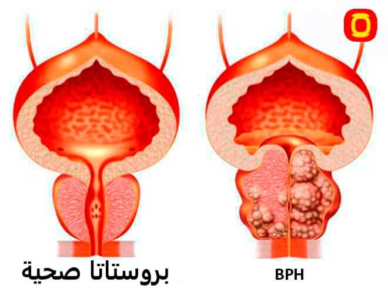

سر ياباني: اليابانيين منذ زمن بعيد كانوا يتخلصون من إلتهاب البروستات خلال أسابيع! مرة واحدة وإلى الأبد! دعونا نكتشف كيف ...
كشف رجل ياباني عن نباتات طبيعية و مكونات للتخلص من مشاكل البروستات
مرحبا! اسمي اساهي . سأخبركم اليوم عن تجربتي في التخلص من إلتهاب البروستات.
مشاكل البروستات هي أكثر المشاكل شيوعًا بين الرجال فوق سن 25 عامًا، لكن الجميع يلاحظون اتجاهًا غير سار بشأن هذه المشكلة والتي تصيب بشكل متزايد الطبقة الأصغر سنًا. الرجال الذين تتراوح أعمارهم بين 20- 60 يعانون بكثرة من هذه "المشاكل".
تم الكشف عن مستخلصات طبيعية إذا تم خلطها ببعضها البعض سوف يتمكن جميع الرجال من التخلص من مشاكل البروستات في المنزل و بأمان تام
- مشاكل البروستات تشمل عدة حالات، من بينها التهاب البروستات (بروستاتيت)، تضخم البروستات (تضخم البروستات الحميد)، وسرطان البروستات. كل حالة لها أعراض مميزة، وهنا سأذكر بعض الأعراض الشائعة لكل منها:
-
- آلام أو حرقة أثناء التبول.
- تكرار التبول.
- الحاجة الملحة والمستمرة للتبول.
- آلام في منطقة الحوض، العانة، الخصية أو الظهر.
- الألم خلف الخصية.
- اضطرابات في الانتصاب أو القذف.
- ألم أو ضغط في المنطقة بين الخصية والشرج (منطقة الحوض الشرجية).
- هذه بعض أعراض تضخم البروستات
- التبول المتكرر، خاصة ليلاً (اضطرابات في الساعات النومية).
- ضعف في تدفق البول.
- الشعور بعدم القدرة على تفريغ البول بالكامل.
- الحاجة الملحة والمستمرة للتبول.
- آلام أو ضغط في المنطقة المحيطة بالبروستات.
- لا تظهر أعراض في المراحل المبكرة في بعض الحالات.
- زيادة التبول أو التبول الشديد.
- ضعف في تدفق البول.
- الشعور بعدم القدرة على تفريغ البول بالكامل.
- ألم أو ضغط في المنطقة المحيطة بالبروستات.
- آلام في العظام (في مراحل متقدمة).
- فقدان الوزن غير المبرر.
هذه بعض أعراض إلتهاب البروستات
جزئيًا، يمكن فهم هذا الموقف، أي رجل يدرك هذه المشكلة و يعبر عن كره وإحراج شديد تجاه مشاكل البروستات . علاوة على ذلك، في الغالبية العظمى من الحالات، بعد معرفة الرجل انه مصاب "بمشاكل بالبروستات"، يشعر بالحرج الشديد حتى انه لا يريد احياناً الإعتراف بالمشكلة التي لديه لأحد

عادة ما يؤدي التهاب البروستات إلى مشاكل صحية أكبر بكثير لذا يجب التخلص من مشاكل البروستات في أقرب وقت ممكن
ما هي الطريقة التي إتبعها اليابانيون منذ زمن بعيد و تخلصوا بفضلها من مشاكل البروستات ؟
الموضوع و ما فيه انهم كانوا يخلطون بعض المكونات الطبيعية مع بعضها و بعد ذلك نتيجة خلط هذه المكونات ينتج لهم خليط سحري للتخلص من مشاكل البروستات في خلال عدة أسابيع معدودة و ربما أقل .
ما هي هذه المكونات التي أتحدث عنها ؟
- تونكة علي
- الزنجبيل
- نبتة الماكا
- نبات القراص
تناول تونكات علي بانتظام إلى تحفيز الإثارة الجنسية، وتحسين ضعف الانتصاب لدى الرجال، كما اتضح أنه يحسن حركة الحيوانات المنوية وتركيزها، مما يزيد من خصوبة الذكور
يوجد في الزنجبيل فيتامين أ وفيتامين ج وفيتامين هـ وبيتا كاروتين والزنك، وجميع مضادات الأكسدة القوية التي تدافع عن البروستات من الجذور الحرة الضارة التي تُسرع تطور التضخم
تساعد على التخلص من الضعف الجنسي و يمكن أن تساعد جذور الماكا على التخلص من ضعف الانتصاب
يساعد تناول مستخلص نبات القراص بانتظام على حماية الرجال من العديد من المشكلات التي قد يتعرض لها مع التقدم في العمر، مثل: مشكلة تضخم البروستات
لسوء الحظ، أعرف عن مشاكل البروستات نتيجة تجربة شخصية. قبل بضع سنوات، تسبب الانخفاض في مستويات هرمون التستوستيرون في جسدي، المرتبط بالعمر، في إصابتي مشاكل البروستات .
يعد انخفاض مستويات هرمون التستوستيرون أحد السمات الرئيسية في مرحلة الشيخوخة عند الرجال أو الانتهاكات الخطيرة في التمثيل الغذائي للذكور. بشكل أساسي، فإن نقص هرمون التستوستيرون هو الذي يؤدي إلى ضعف الرغبة الجنسية وانخفاض الرغبة الجنسية واضطراب التبول، فضلاً عن زيادة الوزن الزائد وفقدان كتلة العضلات.
لذلك بكل بساطة أستطيع أن أقول لكم انني جربت هذه الطريفة بنفسي عدة مرات و نصحت جميع أفراد عائلتي و أصدقائي به و في كل مرة تكون النتائج ممتازة
لقد أنقذتني هذه الوصفة التي كان اليابانيون يتوارثونها عبر الأجيال. دائماً ما يريد الرجال ان يزيدون مستوى هرمون التستوستيرون و التخلص من مشاكل البروستات بوصفات طبيعية و لكن لا يجدون المكونات بسهولة نظراً لصعوبة إيجادها و أماكن نموها و إرتفاع أسعارها بالشراء .
لقد بحثت كثيراً عن هذه المكونات في كل مكان حتى وصلت إلى منتج ممتاز موجود به كل هذه المكونات الطبيعية و هو و المكمل الغذائي المذهل RHINO XX .

مكونات هذا المنتج كالأتي :
- الجينسينج الاحمر
- نبات القراص
- الماكا
- الزنجبيل
- تونكة علي
- و أيضاً بعض المكونات مثل : " غوارانا - سيلينيوم - كافيين - تورين - فيتامينات ب1-ب6-ب12 "


لكم ان تتخيلوا دهشتي عندما وجدت هذا المنتج الرائع و جربته بنفسي و قرأت كل شيء عنه و عن مكوناته ووجدت ان مكوناته جميعها طبيعية 100% و ليس ضار تماماً على الصحة للرجال .
أثار RHINO XX اهتمامي، و طلبته من الشركة المصنعة و بدأت في إستخدامه و و في البداية فكرت انه مجرد منتج عديم الفائدة و لكن في خلال عدة أيام ظهرت نتائجه و كانت المفاجأة انني تخلص تماماً من مشاكل البروستات و و لم تعد لدي أى شكوى من هذه المشكلة بعد الأن و الميزة بهذا المنتج ان تأثيره يدون لفترة طويلة لذا ليس عليك إستخدامه لسنوات .
أثناء بحثي وجدت أراء إيجابة عن هذا المنتج من طبيب روسي شهير إسمه دينيس بوتوف و كان هذا رأيه :
|
|
|---|
التأثير الرئيسييساعد على التخلص من التهاب البروستات و مشاكل البروستات الشائعة و مشاكل سرعة القذف و مشاكل ضعف الإنتصاب و يساعد على تخفيف أعراض إلتهاب البروستات - و الألم واضطرابات البول . |
تأثيرات إضافيةº زيادة الرغبة الجنسيةº يساعد على التخلص من سرعة القذف º يحسن الفاعلية الجنسية º تحسين وظيفة المثانة º يحسن حالة الأوعية الدموية و يساعد على تليين البراز، وتحسين حركة الأمعاء |
آثار جانبيةآثار جانبية لا يوجد. لأن مكوناته طبيعية تماما |
مبادئ المنتجله تأثير معقد على البروستات بسبب التركيبة المختارة خصيصًا من المكونات الطبيعية، والتي توفر تأثيرًا جدياً على البروستات .و يزيل كل الجراثيم المسببة لمشاكل البروستات، ويحسن بنية ووظيفة البروستات. يُنصح بإستخدامه للتخلص من إلتهاب البروستات . |
مكوناتمكون من النباتات الطبيعية والفيتامينات |
كيف تستطيع طلب هذا المنتج في الجزائر ؟
- ملئ النموذج الرسمي للطلب بالأسفل
- بعد ذلك سوف يتم التواصل معك لتأكيد عنوان الوصول
- يتم الدفع فقط بعد إستلام المنتج و هو الشيء الذي جعل الكثير مطمئنون من جودة هذا المنتج
- بعد ذلك يمكنك إستلام المنتج عن طريق عامل التوصيل و الدفع عند الإستلام .
تعليقات:
ماهر
هذا مكمل عاوني نتخلص من بروستات ،كنت نسوووفري مي دوك الحمد لله،تهنت من هذا مشكل
27.09.2023

نهلة
راجلي شكرني بزاااف كي شريتلو RHINO XX،تهنى كامل من حرقت البول،ولاتلو شهوة جنسية ،هدا منتوج معجزة 🫶شكراااا
29.09.2023


آدم
تهنييت من مشكل بروستات كنت نعاني دوك حمدالله ننصحكم بيه متندموش عليه منتوج طبيعي 100%
29.09.2023
كرم
ننصحكم بيه هاد منتج معجزة ،عندي 3 شهور راني نشرب فيه ،بارح درت تحاليل لقيت بروستات نقصلي ،شكرا لي هدا منتوج و ربي سبحانو 👍
30.09.2023

سارة
راجلي كان يشكي بزاف من حرقت البول،كومونديت هادا مكمل ،قلت نشريلو و نشوف بلاك ملاح .عندو شهار و هو يشرب فيه،تهنى كامل من هذا مشكل الحمد لله،وقاية خير من العلاج
30.09.2023

مدحت
شكرا لك على الرابط! لقد كنت أبحث عن الشركة المصنعة والدواء لفترة طويلة، لكنني لم أكن أعرف من أين أطلبه.
2.10.2023

أيمن
انا كمنديتو بارح مزال ملحقنيش،انشاء لله اليوم الحقولي امانتي .
4.10.2023

بسمة
هذا مكمل رجعلنا متعة في علاقة زوجية 🔋💯
4.10.2023

مصطفى
عندي شهاز ملي شريتو ،قوووووة ،فووور هدا منتج ،مستنيش نتائج كما هك👍💪
5.10.2023